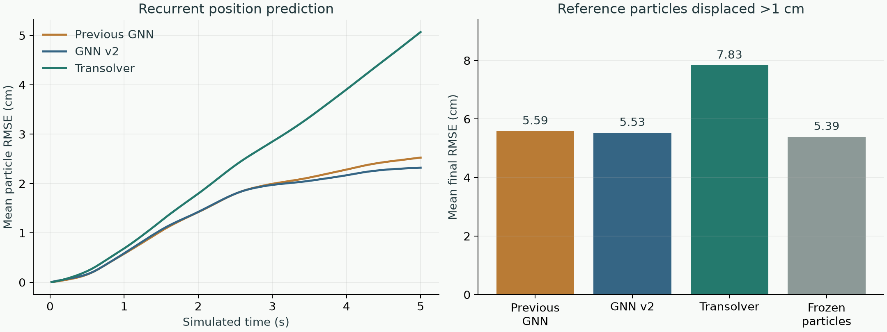

Particles → slices
Each particle receives learned soft weights over 64 latent slices. Weighted particle features form slice features.
PARTICLE MOTION / TRANSOLVER
Predict every material particle's displacement using particle history and nearby rigid-body geometry.
Run particle-transolver-1: four L40S GPUs; 10,000 updates; twelve five-second recurrent evaluations. Training took 13.5 minutes, including validation and checkpoint writes, excluding setup, transfer, and final evaluation.
| Input | Values | Definition |
|---|---|---|
| Particle position | 3 | Current world position relative to the fixed configured origin; scale 1 m |
| Particle motion history | 6 | Two finite-difference velocities from three position frames; scale 1 m/s |
| Material and sampling | 12 | Ten normalized material parameters, particle mass, particle radius |
| Timestep and gravity | 4 | Δt / 0.02 s; world gravity / 9.81 m/s² |
| Each particle–collider pair | 8 | Signed particle-surface gap / 0.07 m; outward normal (3); collider surface velocity minus particle velocity (3); friction coefficient |
Particle feature vector: 25 values. Collider surface velocity includes rigid-body rotation. Pair weight: max(0, 1 − max(gap, 0) / 0.07 m). Gap is the collider signed distance minus particle radius. Collider encodings are summed, so several nearby rigid bodies can contribute to one particle.
Each particle receives learned soft weights over 64 latent slices. Weighted particle features form slice features.
Attention operates on 64 slices per head. It does not construct a 16,384 × 16,384 particle attention matrix.
The slice outputs return to each particle using its slice weights. The decoder predicts three displacement components.
A slice is a learned grouping of features. It does not select which particles move. Every particle passes through every block; particle-neighbor construction is absent. At fixed hidden width, particle–slice work scales with N × S and slice attention with S², where N is particle count and S is slice count.
Architecture source: PhysicsNeMo physics attention, pinned revision; Automotive Crash Dynamics Modeling Accelerated with Machine Learning. This model uses standard Transolver attention, not GeoTransolver or Transolver++. The crash paper predicts acceleration; displacement output and collider conditioning are adaptations for this particle problem.
| Item | Configuration |
|---|---|
| Dataset | Existing 1,000-episode MPM campaign; unchanged training, validation, and test assignments |
| Scene | Initial material volume 1 × 1 × 0.5 m; 16,384 particles; MPM grid 0.04 m; rigid ground at z = 0; no enclosing walls |
| Rigid box | 0.12 × 0.12 × 0.08 m; campaign mass 5–10 kg; existing rest, push, and dragging trajectories |
| Architecture | 128 hidden channels; four blocks; four heads; 64 slices; three-value displacement decoder |
| Parameter count | Transolver: 805,651; GNN v2 motion network: 256,053; GNN v2 selector: 249,961 |
| Training | Four L40S GPUs; 10,000 optimizer updates; one four-step sequence per GPU per update |
| Training recurrence | Reference history initializes the sequence; each prediction becomes the next particle state; gradients pass through all four steps |
| Loss | Position squared error / Δt² at every step; weight 5 when reference displacement from sequence start exceeds 0.5 mm, otherwise 1 |
| Validation | 32 fixed validation sequences every 500 updates; checkpoint selected by global plus moving-particle RMSE |
| Test | 12 matched trajectories; five seconds each (250 recurrent steps); recorded current box motion; no future box state in a single prediction |
| Baselines | Previous GNN with MLP selector; GNN v2 with CNN selector; frozen particles |
Training sequences span 0.08 s, while test rollouts span 5 s. Long-rollout stability must therefore be measured. These test trajectories were reported previously; this is a matched comparison, not a newly untouched test set. Test results do not select the checkpoint.
Mean final position RMSE: 5.07 cm, compared with 2.28 cm for frozen particles. On reference particles displaced more than 1 cm, errors are 7.83 cm and 5.39 cm, respectively.
| Method | Complete rollouts | Mean final position RMSE | Displaced-particle RMSE |
|---|---|---|---|
| Previous GNN + MLP selector | 12 / 12 | 2.53 cm | 5.59 cm |
| GNN v2 + CNN selector | 12 / 12 | 2.32 cm | 5.53 cm |
| Transolver | 12 / 12 | 5.07 cm | 7.83 cm |
| Frozen particles | 12 / 12 | 2.28 cm | 5.39 cm |
Of 72,764 particle instances that remain within 1 mm of their reference initial position throughout the MPM rollout, 69,433 move more than 1 cm at some point in the Transolver rollout. Checkpoint: update 10,000, selected using validation sequences.

Each plotted value is a mean across the same 12 five-second trajectories. Displaced particles are selected by reference initial-to-final displacement >1 cm. This evaluation conditions on recorded current box motion; it does not evaluate contact-force reconstruction.
This experiment changes architecture, collider inputs, particle selection, and training recurrence together. It does not isolate the effect of slice attention. The current checkpoint is unsuitable for reliable force-estimator coupling.
| ID | Motion | Transolver | GNN v2 | Frozen | Transolver displaced particles |
|---|---|---|---|---|---|
| 117 | continuous-drag | 6.49 cm | 5.39 cm | 5.67 cm | 10.87 cm |
| 453 | long-push | 4.93 cm | 1.04 cm | 0.98 cm | 7.87 cm |
| 456 | long-push | 4.89 cm | 4.97 cm | 4.98 cm | 8.91 cm |
| 460 | rest | 4.61 cm | 0.64 cm | 0.59 cm | 6.32 cm |
| 519 | continuous-drag | 5.16 cm | 3.55 cm | 3.61 cm | 8.69 cm |
| 527 | continuous-drag | 5.55 cm | 4.40 cm | 4.58 cm | 9.55 cm |
| 575 | rest | 4.65 cm | 0.73 cm | 0.55 cm | 5.99 cm |
| 578 | long-push | 4.63 cm | 0.77 cm | 0.68 cm | 7.00 cm |
| 689 | continuous-drag | 5.70 cm | 3.54 cm | 3.79 cm | 9.94 cm |
| 850 | rest | 4.70 cm | 0.68 cm | 0.58 cm | 6.29 cm |
| 883 | long-push | 4.72 cm | 1.12 cm | 0.82 cm | 6.90 cm |
| 885 | rest | 4.81 cm | 1.03 cm | 0.57 cm | 5.70 cm |
Comparison protocol: left, MPM reference particles; right, recurrent Transolver particles. Both replay the same recorded box motion. Brown particles, gray box, camera, and lighting use the existing comparison renderer. Display radius 0.012 m; reference MPM grid 0.04 m.
Summary · Per-trajectory measurements · Configuration and splits · Training metrics · Source snapshot
| GPU | Operation | Median GPU time | Median synchronized wall time |
|---|---|---|---|
| NVIDIA L40S | Particle/collider features | 0.212 ms | 0.224 ms |
| NVIDIA L40S | Transolver network | 2.098 ms | 2.113 ms |
| NVIDIA L40S | Complete particle step | 2.653 ms | 2.668 ms |
Warmed measurements: 16,384 particles, one box plus rigid ground, 100 repetitions. Features and network are timed with fixed inputs. The complete particle step advances recurrent particle state with fixed current box input; this is a compute benchmark, not a second physical rollout.
Dedicated same-GPU comparison with GNN v2 and comparison videos are running in a follow-up cloud workflow.
Complete particle step includes Warp feature construction, Torch network execution, and Warp position/velocity/history updates. Force estimation, rigid-body integration, and rendering are excluded. BF16 neural operations, FP32 geometry; no full-step CUDA graph capture or torch.compile. GPU-event and synchronized wall times are measured after warmup.
The input interface supports multiple planes, oriented boxes, and spheres. Every particle receives the sum of nearby collider encodings. No semantic label identifies ground, foot, or shovel. The fixed ground contributes zero surface velocity; moving rigid bodies contribute linear and angular surface velocity.
This training dataset contains one box and the rigid ground. Interface support for multiple objects does not demonstrate generalization to two robot feet, a shovel, or simultaneous robot–object contact. Robot mesh distance queries, a G1 adapter, and learned-particle/force-estimator coupling remain unvalidated for this variant.
Material stress and plastic deformation history are not explicit inputs. Transolver does not supply missing physical state or enforce material laws, nonpenetration, or conservation. Displacement-derived velocity is an interval average; its suitability for contact-force reconstruction requires a separate coupled evaluation.
examples/particle_nerd/transolver/ features.py Warp particle/collider features and history gradients model.py Particle/collider encoders, slice attention, displacement decoder inference.py GPU position, velocity, and history update train.py Differentiable four-step rollout training profile.py Feature, network, and complete-step timings examples/particle_nerd/gnn_v2/evaluate.py examples/particle_nerd/osmo/transolver_training.yaml
Local checks: 31 tests passed; four-step backpropagation, reload, recurrent inference, collider permutation invariance, and Warp history gradients checked. Those execution checks are separate from cloud accuracy evaluation.